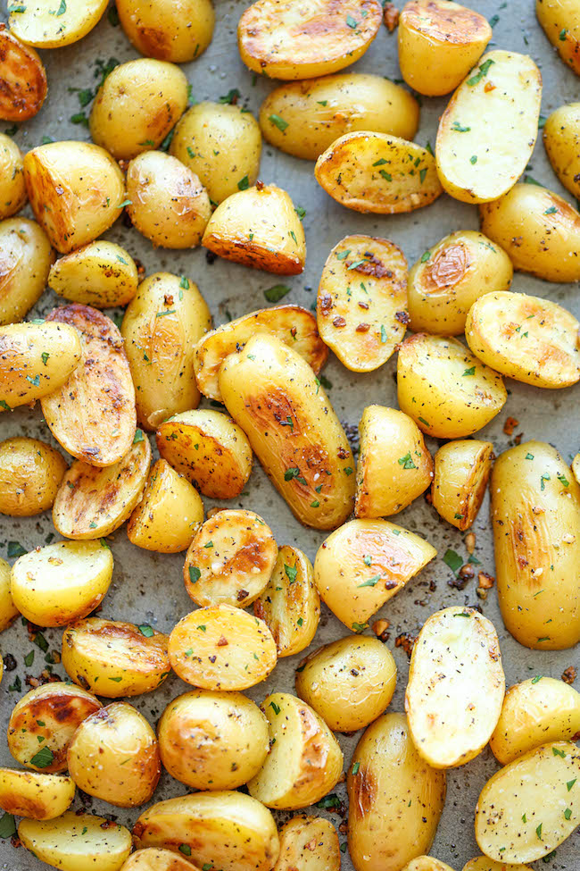

2 pounds small red potatoes, quartered
1/4 cup vegetable oil
2 teaspoons Hidden Valley Original Ranch Seasoning & Salad Dressing Mix Shaker
Step 1
Preheat oven to 450 degrees F.
Step 2
Place potatoes in a 1-gallon-size Glad Zipper Bag and add oil; seal bag. Toss to coat.
Step 3
Add seasoning mix and toss again until coated. Bake in ungreased baking sheet for 30 to 35 minutes or until potatoes are brown and crisp.
